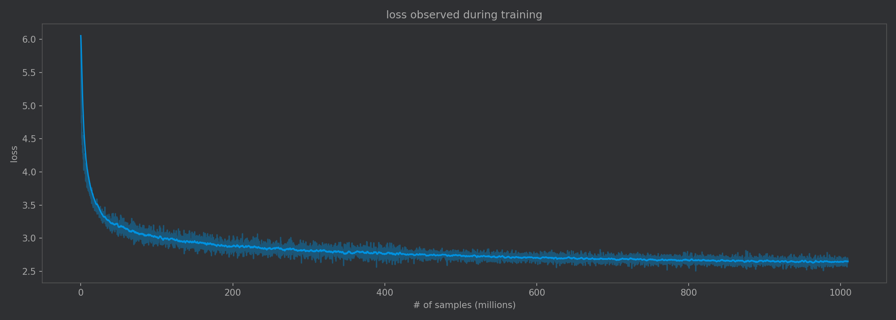
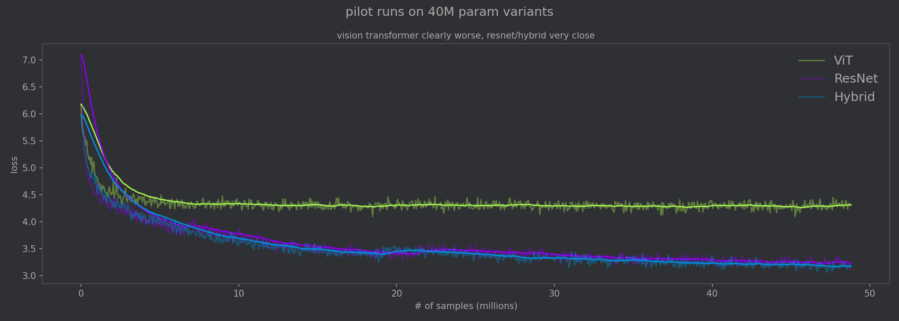
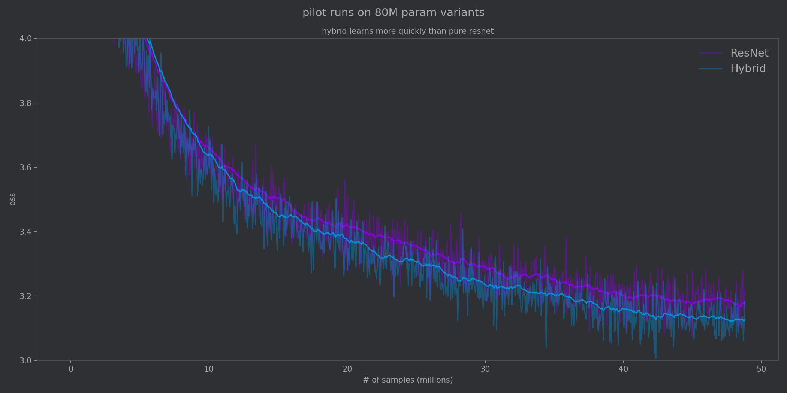

5 minutes
Distilling Stockfish with One Billion Positions
TLDR: I extracted fens and stockfish evaluations for 3.9 billion chess positions. I then trained a neural network on 1 billion of them. To my knowledge, this is the largest open state-value chess dataset released. The dataset is released as the Gigafish dataset on Huggingface.

Loss continued to decrease during the entire training run, strongly suggesting the importance of data volume.
Stockfish is currently the strongest chess engine in the world. It works by using a small neural network millions of times per position. One interesting question we could ask is whether we could replace search depth with a more accurate value function. In 2024, researchers at DeepMind attempted to answer this question. Critically, this approach did not hold search depth constant, and although they had 15 billion action-value pairs, they only had around 530 million state-value estimates.
I wanted to take another look at this problem, building a large state-value dataset with a fixed search depth and experimenting with different model architectures.
Attention isn’t all you need
I trained variants from three main categories of architectures: pure Vision Transformer, pure ResNet, and a hybrid with ResNet blocks followed by Transformer blocks.
I performed pilot runs to narrow down to the best architecture for this task. The first pilot run trained a 40M param variant, and it became clear early on that the Hybrid and ResNet architectures were significantly better than the pure vision transformer. Compared to the ResNet and the Hybrid, the vision transformer is not able to benefit from the inductive biases provided by convolutions. It effectively needs to learn what a 2D grid is from scratch./

On the first pilot run, the vision transformer was clearly worse than the ResNet and the Hybrid.
I then performed a scaled up 80M param pilot run to compare the pure ResNet with the Hybrid. From the loss curves, we can see that ResNet benefits from its inductive biases about the chess board and so the loss on the pure ResNet model quickly drops. However, it struggles to learn the more nuanced whole-board relationships that are necessary for an accurate evaluation and learns more slowly.
The hybrid approach gets us the best of both worlds. ResNet blocks quickly learn spatial patterns and feed them into the Transformer blocks. This is also part of why transformers are so famously data-hungry: they can keep cranking through enormous datasets.

From the second pilot run we can see the Hybrid approach benefitting from inductive biases provided by convolutions as well as the global reasoning from attention blocks.
Input format
The input format for the models were all the same:
- 6 8x8 bitboards for the pieces of the side to moves
- 6 8x8 bitboards for the pieces of the opponent
- 6 “meta” planes encoding things like castling rights and fullmove counter
Loss function used
The training task is to predict the evaluation from the perspective of the player to move. (In other words, if the current player is winning, the predicted % should be >50%.) The model has 103 output logits. The first 101 buckets map to win probabilities of 0% to 100%. The last two buckets handle forced mate.
There were two components to the loss: a cross-entropy component (CE) which penalizes prediction mass outside of the correct bucket, and an ordinal component (ORD) which penalizes predictions far away from the correct bucket. The two losses were combined as a weighted sum.
Training details
The final hybrid architecture is a 79M parameter model with 6 ResNet blocks feeding into 16 Transformer blocks. It was trained with AdamW with a learning rate of 1e-4 with around 20M samples of warmup and a batch size of 1024.
Results
The training began with total loss over 7.0 at the start. By the end of training the CE loss settled at 2.49 and the ORD term at 0.29, resulting in a total training loss of roughly 2.64. On a held-out validation set of ~50k positions the model achieved a validation loss of 2.648.
Other metrics tell a clearer story. Directional accuracy, whether the model correctly predicts which side is winning, reached 92.97%. In other words, given an arbitrary position, the model agrees with Stockfish on which side is winning roughly 19 out of 20 cases, which is fairly impressive considering the number of unclear positions in the dataset.
For positions where there is not a forced checkmate, the model’s predicted win probability was off by about 4–5 percentage points on average. Converting those win probabilities back to Stockfish centipawns gives a centipawn MAE of 64 cp on positions that span the full range from nearly lost to nearly won.
Due to compute constraints, I decided to cap training at 1 billion positions, which took around three days. But based on the loss curves, there is still a great deal of performance left on the table.
Building the Gigafish Dataset
This dataset was constructed from the Lichess Open Database using positions from 37 months of games. I first extracted the fen positions from each of the games using a multithreaded rust script.
Next, I deduplicated the fens, since many of the positions are overrepresented in the dataset. I did this with a poor-man’s map-reduce on disk: hash each fen and append it to a file corresponding to the first 12 bits of the hash. This results in 4096 individual files, which were small enough to deduplicate individually using a hash set in RAM.
Finally, I annotated each remaining fen with Stockfish at depth 10. While this is an embarrassingly parallel task, even distributing across 24 cores took more than a day of compute time.
To my knowledge, this is the largest open (position, eval) chess dataset. The ChessBench dataset has more data points, however those are state-action-value (position + move + eval) and were not calculated at a fixed search depth.